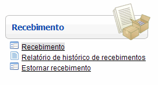
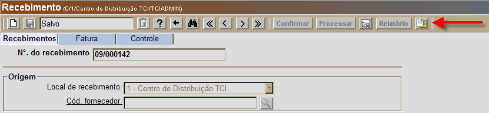
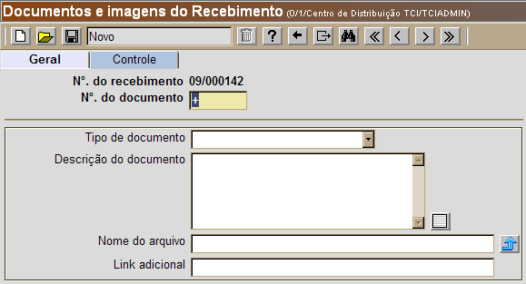

Documentos e Imagens do Recebimento [ Voltar ]Esta tela permite que arquivos de texto e imagem (como notas fiscais digitalizadas e imagens de produtos avariados) sejam anexados a um recebimento. O usuário pode ainda especificar links da internet e intranet para um determinado recebimento. Siga os passos abaixo para anexar um documento: 1º Passo: abra o formulário "Recebimento", que se encontra dentro do menu"Recebimento". 
2° Passo: crie e salve o recebimento ou selecione um recebimento existente para o qual deseja carregar um documento. Clique no botão  [Procurar]
para visualizar uma lista com os recebimentos existentes. Clique duas
vezes para selecionar o recebimento desejado. Para mais informações
sobre como criar um recebimento, clique aqui para
ver manual de ajuda da tela "Recebimento". [Procurar]
para visualizar uma lista com os recebimentos existentes. Clique duas
vezes para selecionar o recebimento desejado. Para mais informações
sobre como criar um recebimento, clique aqui para
ver manual de ajuda da tela "Recebimento".3º Passo: clique no botão  para abrir o formulário "Documentos e imagens do Recebimento".
O botão se encontra
no canto superior direito da tela "Recebimento".
para abrir o formulário "Documentos e imagens do Recebimento".
O botão se encontra
no canto superior direito da tela "Recebimento".
Ao clicar no botão , a seguinte
tela será exibida:
4º Passo: informe na tela os detalhes do documento. Selecione o tipo de documento, adicione uma descrição para o documento ou imagem, selecione o arquivo que deseja carregar (upload) e, se necessário, especifique um link adicional da internet ou intranet (www.linkexterno.com/arquivo.pdf, por exemplo). Para selecionar o arquivo para o upload, veja abaixo:

5º Passo: por último, clique no botão  [Salvar] para concluir a associação
do arquivo ao recebimento. [Salvar] para concluir a associação
do arquivo ao recebimento. Observação: se desejar carregar outros arquivos de imagem e/ou de texto, repita os passos 4 e 5 quantas vezes for necessário. |
 para selecionar
o arquivo que deseja carregar; e
para selecionar
o arquivo que deseja carregar; e